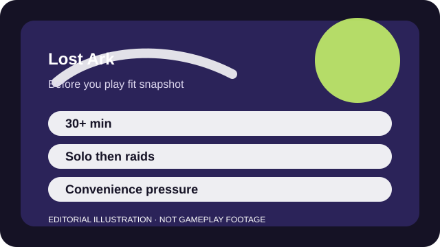

BEFORE YOU PLAY
What this page is and is not
This is a sourced editorial fit profile. It is designed to help with a yes-or-no play decision, and it does not claim a scored hands-on review.
The central fit question is whether you want the combat enough to tolerate the live-service scaffolding around it. Players who only want the story often stop early. Players who love the combat usually decide whether the endgame structure is a deal-breaker later.
The first-session loop to judge is simple: Push story or raids forward, hone gear, and manage roster-wide systems that reward regular return play.
Roster growth, gear honing, alts, and scheduled activities are central to the long-term game.

FIT SNAPSHOT
Lost Ark at a glance
| Genre | Online action RPG |
|---|---|
| Platforms | PC |
| Business model | Free-to-play online action RPG with optional convenience spending and account-wide progression layers. |
| Typical session | 30 minutes to several hours, especially once raids and roster systems matter. |
| Play style | ARPG combat inside an MMO schedule |
| Learning barrier | Combat is readable, but currencies, engravings, alts, and roster systems make the endgame much denser than the opening hours suggest. |
| Social shape | Story play can be solo, while raids and endgame participation become the bigger long-term draw. |
WHO IT FITS
Best fit, likely friction, and the social reality
players who like sharp isometric combat and do not mind layered endgame systems
players who want a simple casual ARPG or zero schedule pressure
Story play can be solo, while raids and endgame participation become the bigger long-term draw.
Roster growth, gear honing, alts, and scheduled activities are central to the long-term game.
FIRST SESSION PLAN
How to test the fit in one evening
- Finish the early story without alt anxiety or endgame spreadsheets open beside you.
- Save paid currency until you understand which roster pressures actually matter.
- Separate 'fun build' goals from 'efficient raid prep' goals so the game stays readable.
- Look for beginner-friendly learning groups before you let raid expectations define the whole game.
Use the first session to answer these fit questions instead of judging rank, win rate, or store value immediately.
- Do you enjoy ARPG combat enough to live with MMO chores around it?
- Will alt-based progress feel clever or simply tiring?
- Are you comfortable with a live economy constantly talking about efficiency?
TIME, COST, AND COMMITMENT
What you are really signing up for
| Session budget | 30 minutes to several hours, especially once raids and roster systems matter. |
|---|---|
| Social demand | Story play can be solo, while raids and endgame participation become the bigger long-term draw. |
| Progression shape | Roster growth, gear honing, alts, and scheduled activities are central to the long-term game. |
| Spending pressure | Free entry exists, but progression convenience and cosmetics can create pressure if you start chasing efficiency. |
Lost Ark can turn into a calendar hobby faster than the leveling game suggests, especially if you care about raids or keeping pace.
Free entry exists, but progression convenience and cosmetics can create pressure if you start chasing efficiency.
SOURCES AND LIMITS
What was checked, and what can change
- Catch-up events and honing incentives can shift the new-player experience dramatically.
- Class releases and balance updates can change what feels approachable.
- Regional service policies and monetization framing may evolve over time.
This profile uses official game pages and defensible general product knowledge to frame the player fit. It does not claim live testing across every platform, accessibility need, or current event rotation.